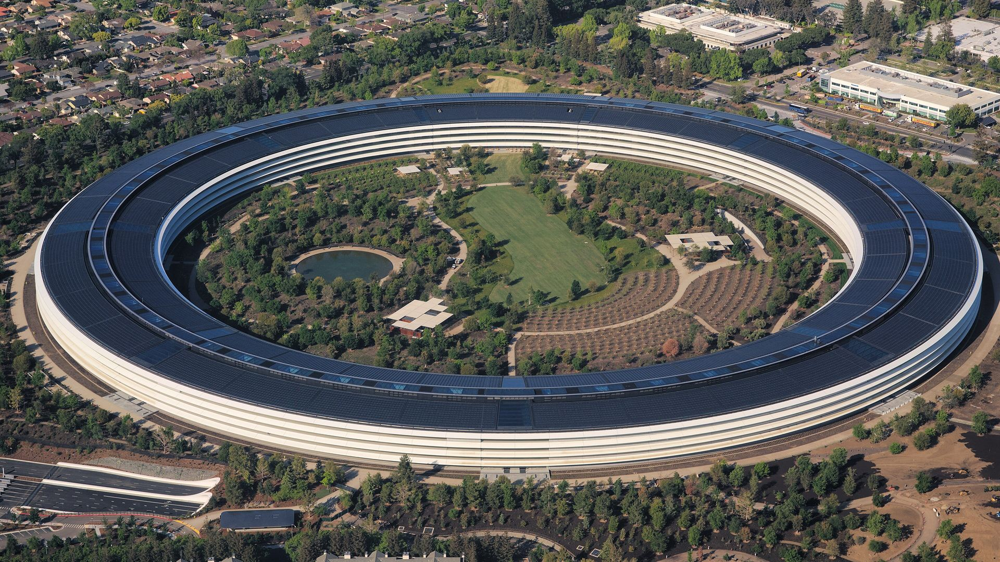

涵蓋年份2013–2026
Apple Park
一座以無限循環為概念的總部，也象徵 Apple 對整合設計、能源與細節的執念。
不只價格。從 Apple Park、iPhone、Watch 到 Vision Pro，理解每個產品如何形塑一代人的科技記憶。

一座以無限循環為概念的總部，也象徵 Apple 對整合設計、能源與細節的執念。
Pro、Plus、mini、e、Air 與 Duo，價格帶與使用情境持續分化。
Apple 將螢幕帶離手機邊界，重新定義空間運算與沉浸式內容。
以「站在科技與人文交會處」奠定 Apple 的產品哲學，也影響第一代 iPhone 的極簡方向。
在供應鏈、服務、Apple Silicon 與隱私治理上擴張生態系，推動 iPhone 進入成熟期。
從配件走向健康與運動平台，是 iPhone 生態最重要的隨身節點之一。
每台手機都使用可追溯來源的真實產品圖；Plus／Max 以尺寸比例呈現，並保留鏡頭排列與世代差異。
| 年份 | 機型與起售價 | 當年起售 | 重點說明 |
|---|
每年「最便宜新款」的美元起售價。將滑鼠移到節點上，可查看該年度資訊。
真正改變 iPhone 定位與價格結構的時刻。
用預算、尺寸、相機與使用情境，快速縮小選擇範圍。